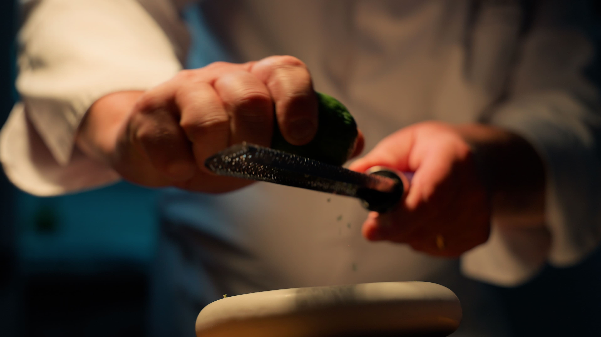
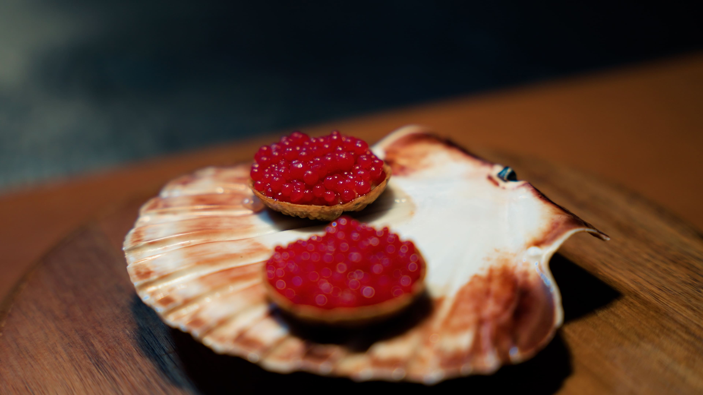
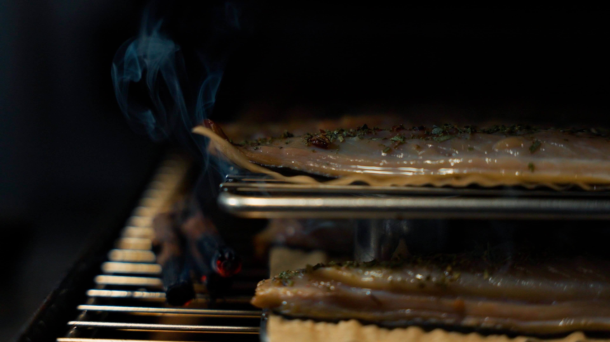
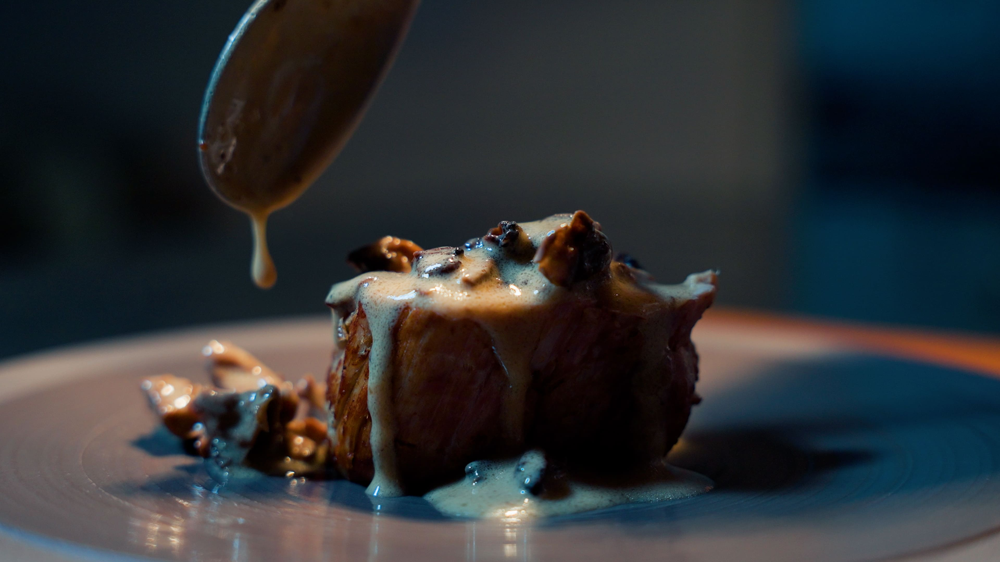
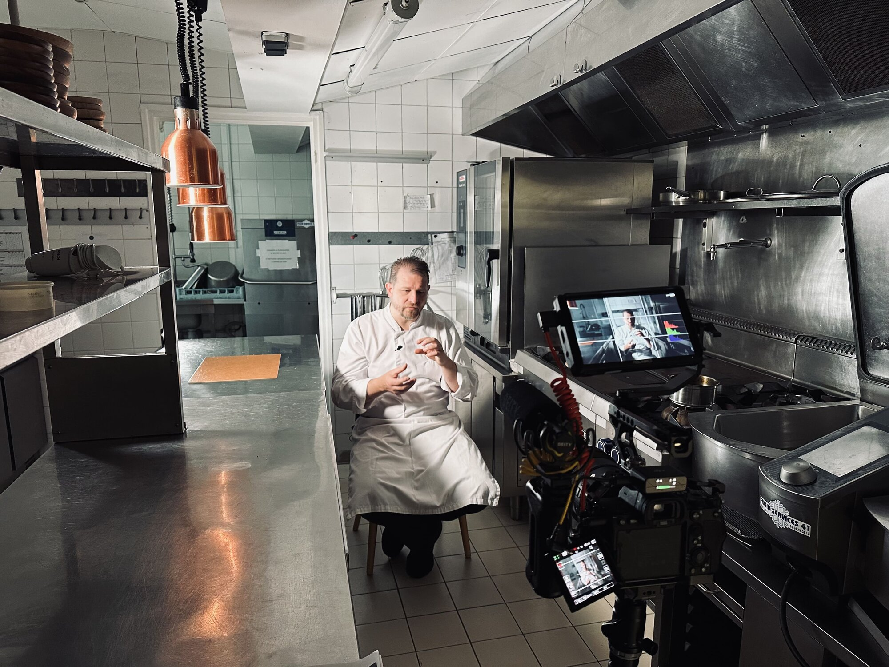
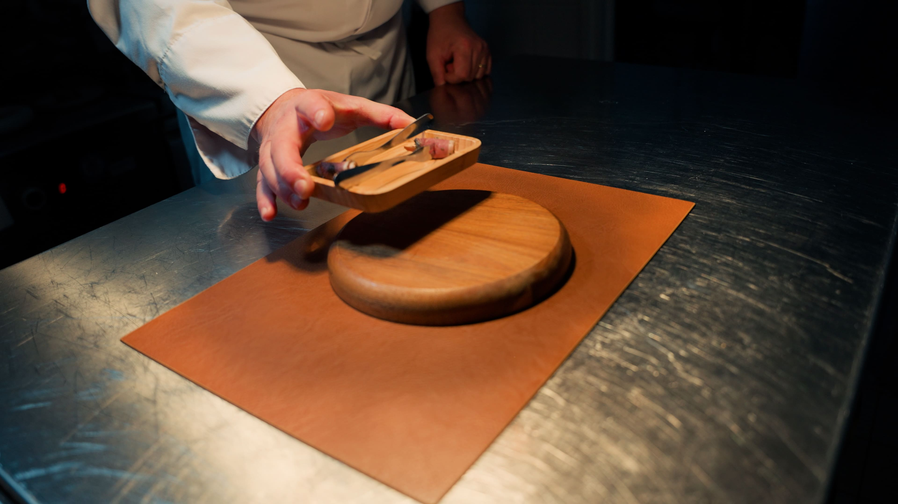
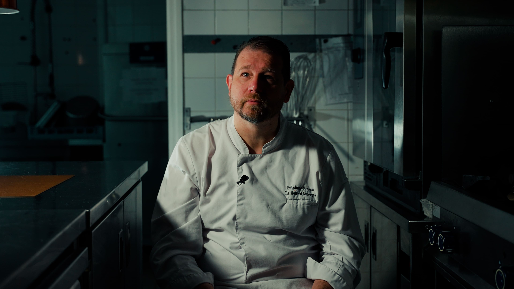
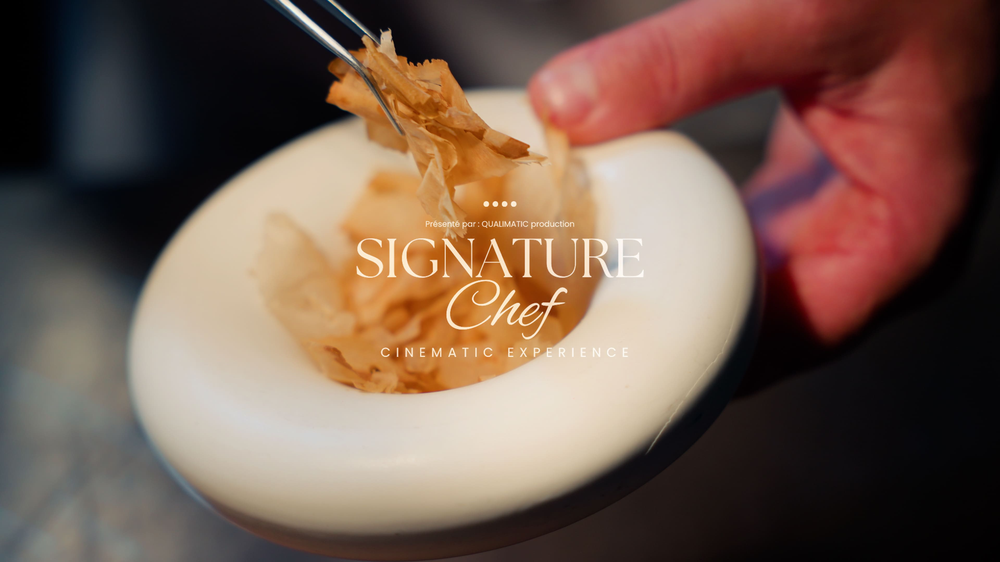

01 — LE HOOK
Les 5 premières secondes
Un enchaînement rapide de plans courts. Cuisson, dressage, feu, gestes précis. Rythme soutenu dès l'ouverture pour capter immédiatement le regard.
Film culinaire haut de gamme
Vous ne présentez pas votre restaurant. Vous faites vivre une expérience. Chaque image traduit votre identité, chaque plan met en valeur votre savoir-faire.
Le client découvre l’univers du chef à travers son histoire, son parcours, ses motivations et sa vision de la cuisine. Cette immersion donne une dimension humaine à l’expérience et permet de tisser un lien authentique entre le chef et ses clients.


Vous attirez une clientèle sensible au détail. Vous montrez le niveau de votre établissement, sans discours commercial. Vous installez une image forte et cohérente.
Votre restaurant marque les esprits avant même la réservation.

J’accorde une grande importance à la lumière. Elle apporte une esthétique cinématographique aux images et met en valeur les plats de manière appétissante et captivante.
Une esthétique qui renforce immédiatement la perception haut de gamme de votre travail et de votre univers.
Un film de 60 secondes, construit pour capter et retenir l'attention du début à la fin.

Un enchaînement rapide de plans courts. Cuisson, dressage, feu, gestes précis. Rythme soutenu dès l'ouverture pour capter immédiatement le regard.

Interview face caméra dans un environnement maîtrisé. Cadrage, lumière travaillée. Questions guidées pour un discours fluide. Alternance face caméra et voix off.

Filmé en conditions maîtrisées. Plans serrés sur les textures et le dressage. Mouvements lents et précis. Mise en valeur des détails et des finitions.

Montage structuré, alternance de plans courts et posés. Transitions fluides. Sound design synchronisé avec l'image. Rythme constant jusqu'à la fin.

Vous devenez le visage de votre restaurant. Vous partagez votre vision, sans artifice. Vous incarnez votre travail.
Résultat, une connexion directe avec le spectateur.
L'interview
Vous n'avez rien à préparer. Je vous guide pendant toute la prise. Vous parlez simplement de votre métier et de ce qui vous anime.

FILMLivrable
Vous recevez une vidéo prête à être diffusée,
pensée pour votre site et vos réseaux.
Contenu de la prestation
Vallée de la Loire · Île-de-France · Provence · Côte d'Azur · Bordeaux · Bourgogne · sur demande
Découvrir toutes les zones ↗